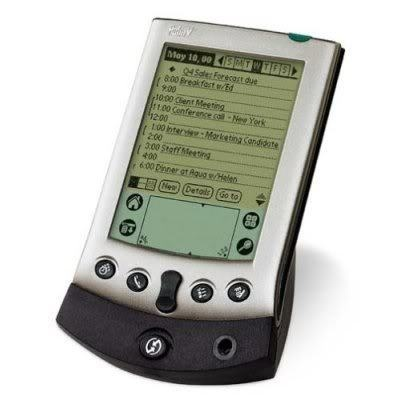

My Coding Journey
— by Nicole FreedBeginning
I've been wanting to learn to code for a long time.
My coding journey began some 15 years ago, when I was a graduate student in traditional Chinese medicine (TCM). In studying herbs, we had to study lots of interconnected bits of information at a time, each of those often with multiple interconnected bits of information.
For instance, here's my favorite herb, wu wei zi (Fructus Schsandrae Chinensis), and all the connected bits of information we have to learn for it:
- Pinyin Name: Wu Wei Zi
- Latin (Pharmaceutical) Name: Fructus Schisandrae Chinensis
- Category: Stabilize and Bind
- Flavors: sour
- Temperature: warm
- Channels Entered: Kidneys, Heart, Lung
- Actions & Indications:
- Contains Leakage of Lung Qi & Stops Coughing:
- chronic cough
- wheezing due to Lung deficiency or Kidney (yin) and Lung (qi) deficiencies
- Tonify Kidneys, Binds Essence, Stops Diarrhea:
- nocturnal emission
- spermatorrhea
- vaginal discharge
- urinary frequency
- daybreak diarrhea
- Inhibits Sweating & Generates Fluids:
- excessive sweating, especially with thirst or dry throat. Can be used for spontaneous sweating, night sweat, wasting & thirsting
- Quiets Spirit & Calms Heart:
- palpitations
- irritability
- dream-disturbed sleep
- insomnia due to injury to blood & yi of Heart & Kidneys
- Allergic Skin Disorders & Improves Liver Function
- hepatitis
- Cautions & Contraindications:
- exterior conditions
- excess heat in interior
- early stages of cough/rash
Whew! That's a lot of information—and that's only for one herb! We needed to learn about 350 herbs, and then about 250 formulas, the majority with 4–12 different herbs and a different set of interconnected bits of information. So you can see that studying herbs is a big—and specialized—task!
In order to assist us in studying, students used a number of different study tools and mnemonic devices: handwritten flash cards, computer-generated flash cards, notes, underlining, lecture recordings, funny stories, self-made quizzes, etc. A set of colorful, multimedia flash cards with colored symbols, words, and images called the Herb Zoo Cards was one of the most popular. I used the Herb Zoo cards extensively, but I found that the best and most useful tool for me was a mobile flashcard app for the Palm Pilot and good ol' repetition, repetition, repetition.
However, at the time (2003–2005), the Palm Pilot was on its way out and the iOS on its way in. (Android hadn't been invented yet.) I tried just about every flashcard app made for the iPhone, but I found nothing comparable to the Palm Pilot app. The reason this was so special was that it allowed me to test two different categories of my choice (for instance, Pinyin Name and Actions) against one another. While several iPhone apps allowed one to test multiple categories (for instance, Pinyin Name, Latin Name, Actions, Indications, and Channels Entered) against one another simultaneously, none of them allowed me to isolate or choose the categories. If you've never tried it, testing five or more bits of information against one another is woefully inefficient and hard to remember. No matter how much I wanted to use one of the slick iPhone apps, I kept coming back to my graphically rudimentary but trusty Palm Pilot.
So one day the idea hit me: What if I designed my own iPhone app? But to do that, I'd have to learn to code. I remembered the little bit of coding I had done in high school math class, using the old VAX computers without screens and printing to the old green-and-white dot-matrix computer paper on spools. I remember being so excited by the concept of using a counter (which was pretty radical at the time) to automate adding an subtracting, and I had always loved and been good at math, so I suspected I'd make a good programmer and have fun doing it. The only thing was—how and where to start?
Simultaneously with conceiving the idea, I stumbled upon a small company in Scotland, then called RunRev, that had created a very-high level programming language based on the old Apple Hypercard technology that aimed to make programming simple for beginners. It used a graphical user interface (GUI) similar to HyperCard or Apple's XTools, and its big claim to fame was that it was even closer to natural English than Python or Ruby. It was already being used in grade school and high school programming classes all over the world. It was called Runtime Revolution (now LiveCode), and I fell in love.
Now, almost fifteen years later (it's mid-2017 as I write this), after many twists and turns, the idea for the flashcard app geared to the way Chinese medicine students have to study has stayed with me. And as far as I know, there still isn't any flashcard app out there for either iOS or Android that does what I want it to, although there are many flashcard apps. So I know it's mine to do. :)
To be continued...